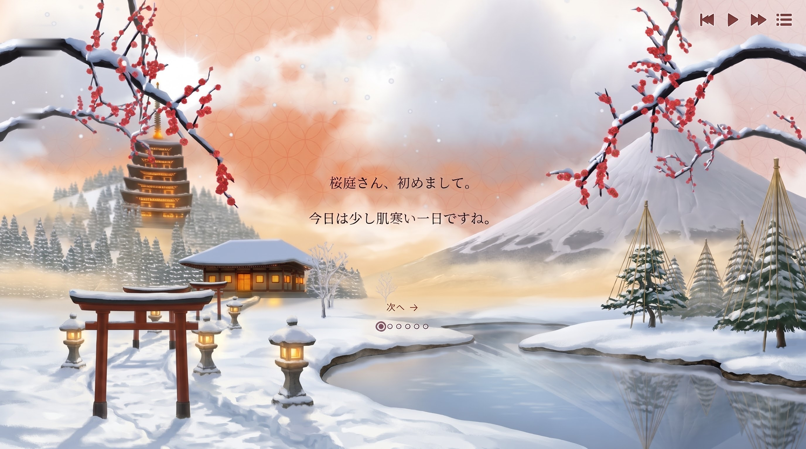

桜庭さん、初めまして。
今日は少し肌寒い一日ですね。
シンガポールから参りました、Eze（エズ）と申します。
お読みいただきたいメッセージを用意してまいりました。急ぎませんので、どうぞごゆっくりお読みになってください。
本日はよろしくお願いいたします。
今日は初めて担当していただくセラピストさんですが、
とてもお綺麗で、素敵な方だと感じております。
お会いできて嬉しく思っております。
もしよろしければ、今回は少し特別な癒しのオプションについて、ご相談がございます。
こちらの表をご覧いただき、無理なく対応できるものがございましたら、お選びいただけますでしょうか。組み合わせていただいても構いません。
料金は、内容と金額が決まりましたら、その場でお渡しいたします。
どのような内容になりましても、いつものマッサージを受けられること自体を楽しみにしております。
初めてお会いできることを嬉しく思っております。本日はどうぞよろしくお願いいたします。
ご不安なものや対応が難しいものは、無理にお選びいただく必要はございません。
すべて見送っていただいても大丈夫です。いつもの施術だけでも、楽しみにしております。